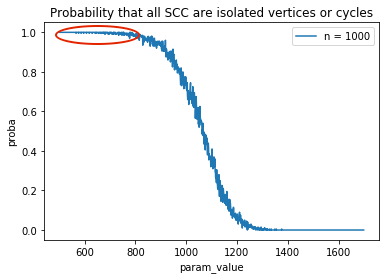

Sergey Dovgal
My current affiliation is attaché temporaire d’enseignement et de recherche (one-year postdoc with 192h teaching duty) in Université Sorbonne Paris Nord, Laboratoire d’Informatique de Paris Nord, former Université Paris 13.


Research overview
Since 2016, I am doing research in the field of Analytic Combinatorics. In short, Analytic Combinatorics studies generating functions from the perspective of complex analysis.

\[ C(z) = \sum_{n = 0}^\infty c_n 2^{-n(n-1)/2} \dfrac{z^n}{n!} \] \[ c_n := \sum_{k = 0}^n {n \choose k} a_k b_{n-k} 2^{k(n-k)} \]
Two major applications of Analytic Combinatorics
Generating functions allow you to enter the world of simplistic perfection and they demonstrate an innocent mathematical beauty. But they are also a powerful tool when it comes to studying large random objects.
Enumeration allows to tell you how many objects of a given size do there exist, and in a more general form, allows to access distributions of parameters of many systems.
Random generation allows to generate an object from a given class uniformly at random. In somewhat more casual terms, it can be referred to as “Monte-Carlo experiments” and you can find a huge number of applications on the web.
Phase transitions
The term “phase transition” was mostly used by physicists, but can be also applied to many combinatorial situations, when a small change of a certain parameter results in a huge asymptotic change of some other parameter. The original studies of the physical phase transitions, including Ising and Potts models, considered graphs which formed certain regular lattices: from rectangular ones to more complicated including maps on surfaces. Of close relation is the percolation theory which is sometimes called “the simplest model displaying a phase transition”.
The phase transition phenomenon in random simple graphs and multigraphs has been thoroughly studied. One of the current goals of our research group is to give an equally thorough description for a rapidly growing research body of random directed graphs.

Random generation
Sampling words uniformly at random from non-ambiguous context-free grammars gives a solid basis for more advanced applications. The principle of Boltzmann sampling can be most easily illustrated using the example of Catalan binary trees, which are defined as rooted binary trees. The method consists of taking the equation whose generation function \( T(z) = \sum_{n \geq 0} T_n z^n \) satisfies \[ T(z) = z + z T^2(z), \] fixing a positive value \(z \in (0, 1/2) \) and making a Bernoulli choice \( \Xi_z \) such that \[ \mathbb P( \Xi_z = 0) = \dfrac{z}{z + z T^2(z)}, \] \[ \mathbb P( \Xi_z = 1) = \dfrac{z T^2(z)}{z + z T^2(z)}. \] If \( \Xi_z = 0 \), the generation outputs a single node and stops, otherwise it recursively calls two Boltzmann samplers with a parameter \( z \) and outputs a tree constructed by linking two recursively generated trees. By a careful choice of \( z \), this allows to generate large trees of necessary size in quasilinear time.
We are currently developing a polynomial-time tuning framework which allows to design flexible Boltzmann samplers.
Useful links
-
The purple book entitled Analytic Combinatorics is an equivalent of Bible in our field. You can also follow an online-course.
-
ALEA Network is a French portal containing event announcements, links to different research groups, courses and software, internships, etc.
-
Laboratoire d’Informatique de Paris Nord, see also equipe CALIN